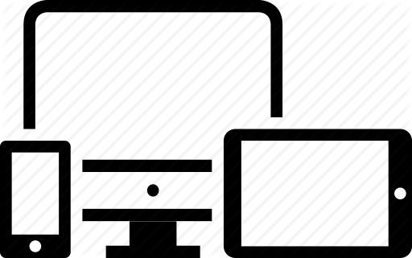

Étudiant en première année de DUT informatique

À propos
Bonjour et bienvenue sur mon site professionnel. Cliquez sur l'icone pour en savoir plus sur moi.
Ci-dessous une carte de l'IUT de Fontainebleau, établissement au sein duquel je fais mes études.
À propos ➡️
Je m'appelle Dorian Terbah, je suis actuellement en première année de DUT informatique à l'UPEC (Université Paris-Est Créteil) et je suis en recherche d'apprentissage pour pouvoir continuer ma seconde année en alternance. J'ai suivi un cursus scientifique en option ISN (Informatique et Sciences du Numérique) au lycée Jacques Amyot situé à Auxerre.
Organisation ➡️
Mon site se décompose en 5 pages principales où vous pourrez retrouver :
L'onglet Accueil sur lequel vous êtes en ce moment qui a pour objectif de me décrire et de présenter mon briévement site.
L'onglet CV sur lequel vous pourrez trouver mon CV adapté pour le web. Vous pourrez également y retrouver une version imprimable.
L'onglet Réalisations sur lequel vous retrouverez mes différentes créations informatiques.
L'onglet Tutoriels sur lequel se trouve différents tutoriels écrits à partir de mes expériences informatiques
L'onglet Galerie image où sont exposées des photos qui retracent l'ensemble de mes projets informatiques.
L'onglet Contact qui vous permettra de m'envoyer votre commentaire et de juger la qualité de mon site.
Mes atouts ➡️
Créatif
J'aime beaucoup la programmation, et ce secteur informatique m'offre la possibilité de pouvoir créer du vrai contenu, et de pouvoir découvrir de nouveaux points de vue quant à la création numérique.
Ambitieux
Depuis toujours, je me suis toujours démené pour réussir un maximum et réaliser ce que je souhaite faire, à savoir travailler dans le monde de l'informatique. Je souhaite m'orienter après mon DUT vers une école d'ingénieur, ou bien vers un master spécialisé dans le développement Web ou dans des mathématiques appliquées à l'informatique.
Sérieux et motivé
Ma plus grande motivation est de faire de mon futur métier l'informatique, car c'est un domaine qui m'intéresse grandement. De plus, la motivation permets de mener ses projets à leurs aboutissements, et de ne pas reculer devant l'obstacle.
Disponible sur toutes les plateformes
Site créé avec les langages suivants :